2004
От винта!
Исполняет: Сергей Мардарь
Декабрь 2004 года (серия «Полёты во сне и наяву»)
2011
Ниточка
Исполняет: Сергей Васильев
27 апреля 2011 года (саундтрек фильма «Смешарики. Начало»)
2012
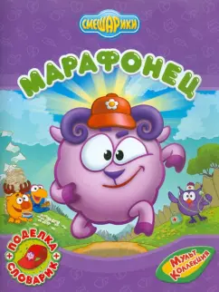
Слушать
Марафонец
Исполняют: Михаил Черняк, Антон Виноградов, Сергей Мардарь, Марина Ланда, Сергей Васильев
1 января 2012 года
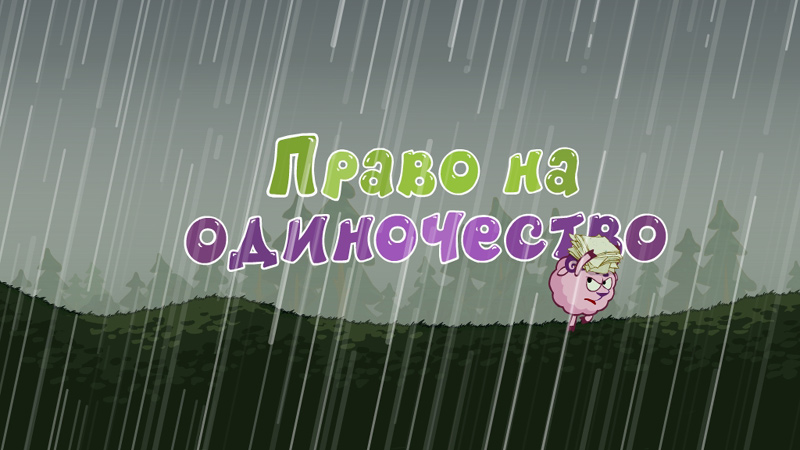
Слушать
Право на одиночество
Исполняет: группа СмешBand и Сергей Васильев
1 января 2012 года
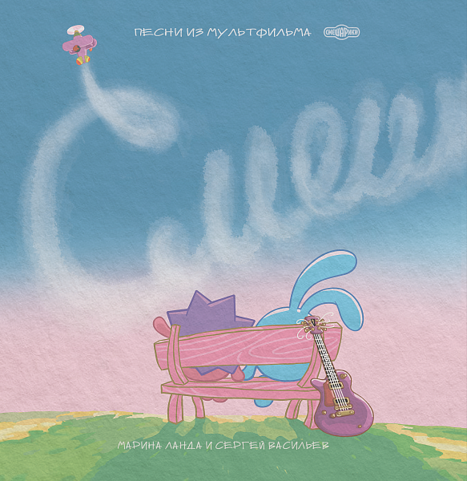
Слушать
Плюс 7 минус 7
Исполняют: Смешарики, Марина Ланда и Сергей Мардарь
1 января 2012 года
Куда уходит старый год?
Исполняет: Сергей Мардарь
1 января 2012 года
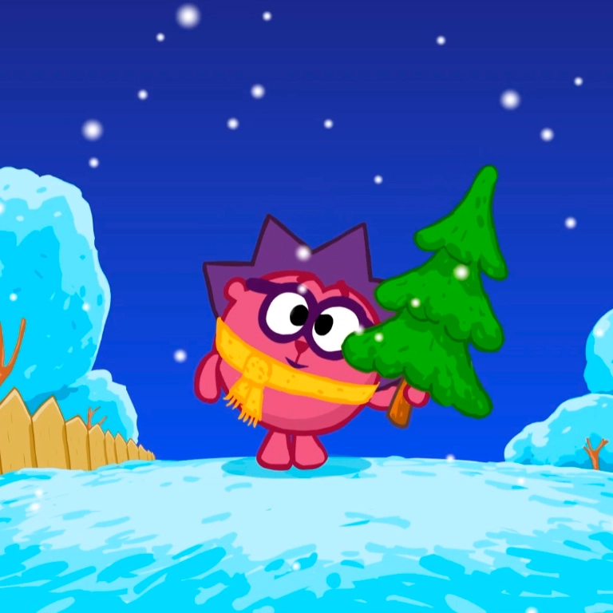
Слушать
Новогодняя колыбельная
Исполняет: Марина Ланда
1 января 2012 года
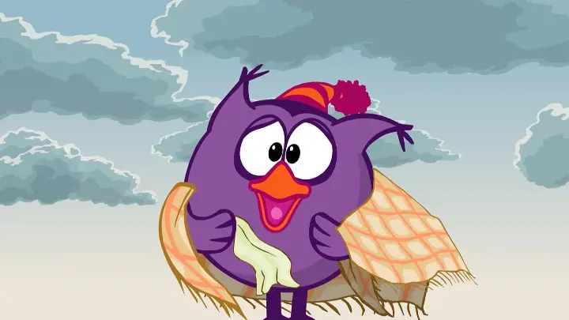
Слушать
Ветер, ветер
Исполняют: СмешBand, Марина Ланда и Джангир Сулейманов
1 января 2012 года
Хорошее настроение
Исполняют: СмешBand, Сергей Васильев и Марина Ланда
1 января 2012 года
Бабочка Моя
Исполняет: Сергей Васильев
1 января 2012 года
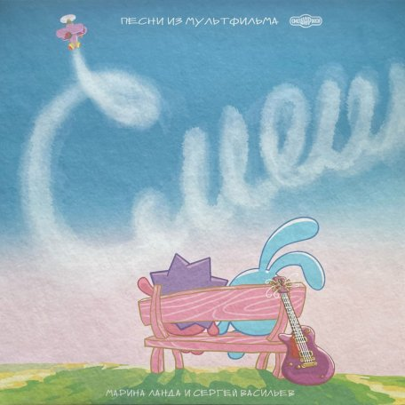
Слушать
Круглая песня
Исполняет: Музыкальный театр детей Марины Ланда
1 января 2012 года
2013
Обормот
Исполняют: Марина Ланда и Сергей Мардарь
31 марта 2013 года
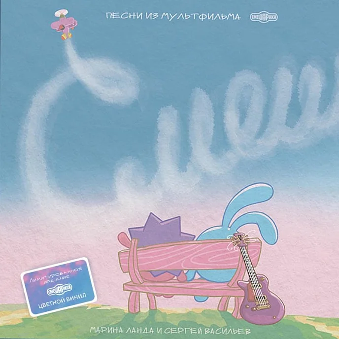
Слушать
Бедненький больной
Исполняют: Вадим Бочанов, Марина Ланда, Антон Виноградов и Сергей Мардарь
26 марта 2013 года
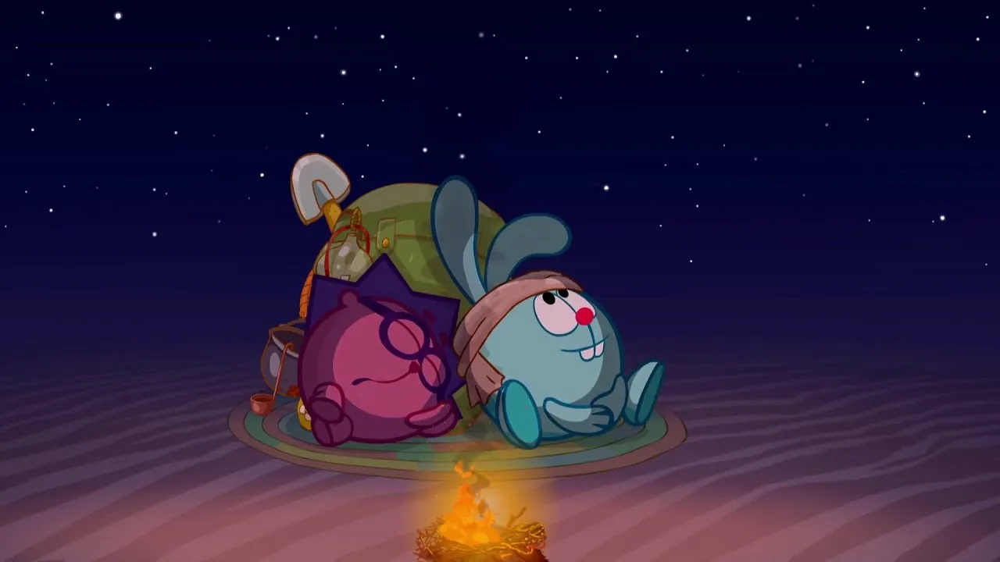
Слушать
Город Омск
Исполняют: Александр Шпынёв, Сергей Мардарь, Марина Ланда и Антон Виноградов
7 мая 2013 года
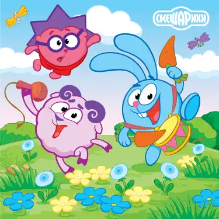
Слушать
Вести-бу-би-лю-би-бу
Исполняют: Сергей Мардарь, Марина Ланда и Антон Виноградов
16 июня 2013 года
2021
Славный город Кострома
Исполняют: Сергей Васильев и Марина Ланда
2021 год
Шубиду
Исполняют: Михаил Черняк, Сергей Мардарь, Вадим Бочанов и Марина Ланда
2021 год
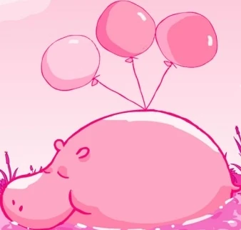
Слушать
Белым на белом
Исполнили: Сергей Васильев, Марина Ланда и Константин Михайлов
2021 год
2022
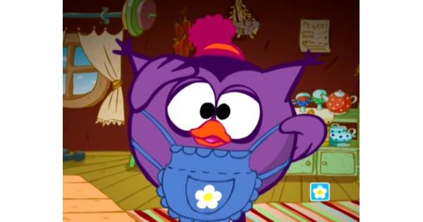
Слушать
Что-то я устала (Песенка Совуньи)
Исполняет: Сергей Мардарь
2022 год
2023
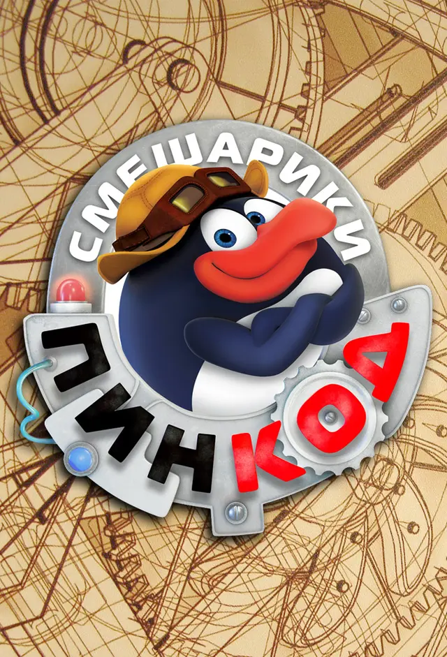
Слушать
ПинКод
Исполняют: Сергей Мардарь и Марина Ланда
2023 год